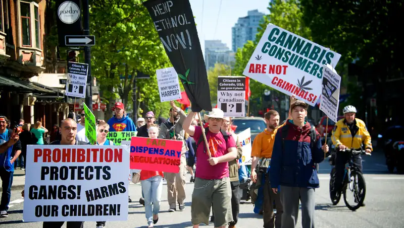
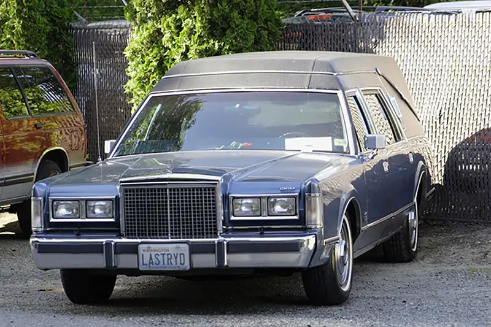
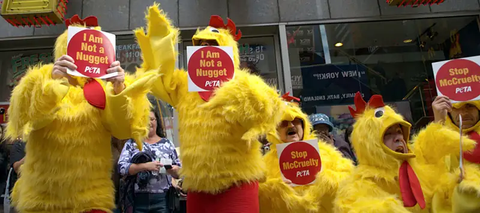
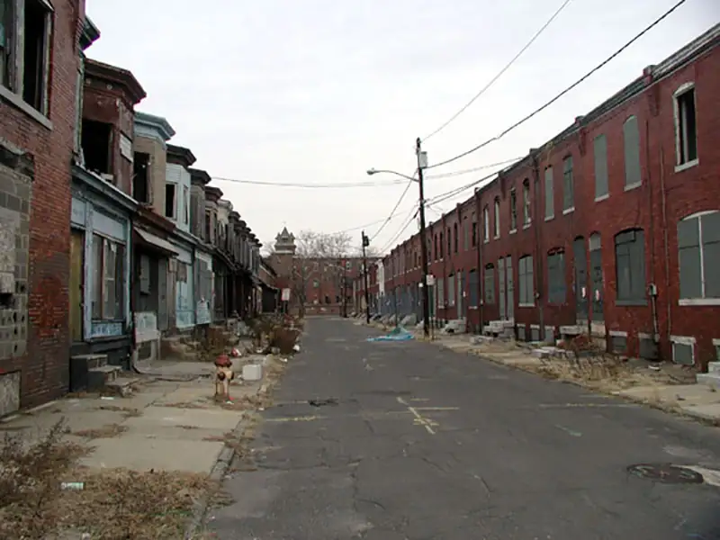
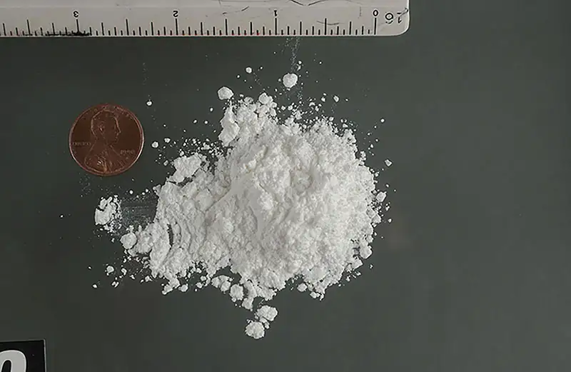
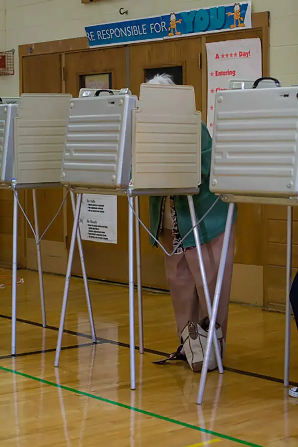
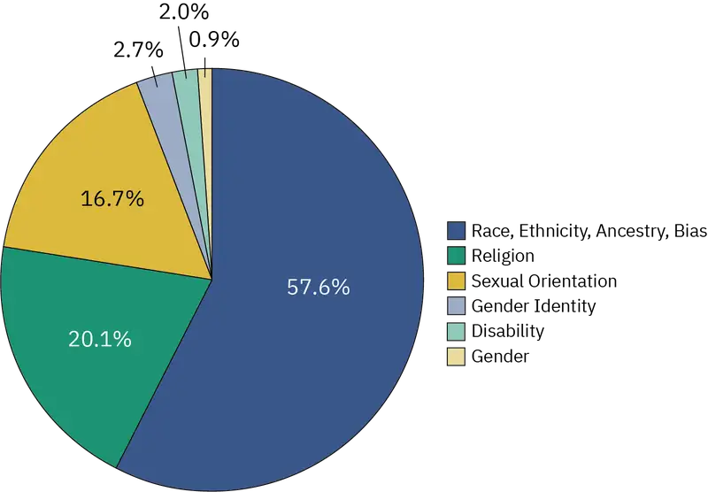
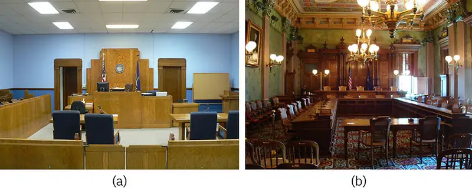

Chapter 7: Deviance, Crime, and Social Control¶
Introduction¶

After decades of classification as an illegal substance, marijuana is now legal in some form in nearly every state in the country. Most of the others have decriminalized the drug and/or have made it available for medical use. Considering public opinion and the policy stances of governors and legislators just ten or fifteen years ago, this is a remarkable turn of events.
In 2013, the Pew Research Center found for the first time that a majority of people in the United States (52 percent) favored legalizing marijuana. Until that point, most people were in favor of retaining the drug's status as illegal. (The question about marijuana’s legal status was first asked in a 1969 Gallup poll, and only 12 percent of U.S. adults favored legalization at that time.) Marijuana had for years been seen as a danger to society, especially to youth, and many people applied stereotypes to users, often considering them lazy or burdens on society, and often conflating marijuana use with negative stereotypes about race. In essence, marijuana users were considered deviants.
Public opinion has certainly changed. That 2013 study showed support for legalization had just gone over the 50 percent mark. By 2019, the number was up to 67 percent. Fully two-thirds of Americans favored permitting some types of legal usage, as well as decriminalization and elimination of jail time for users of the drug (Daniller 2019). Government officials took note, and states began changing their policies. Now, many people who had once shunned cannabis users are finding benefits of the substance, and perhaps rethinking their past opinions.
As in many aspects of sociology, there are no absolute answers about deviance. What people agree is deviant differs in various societies and subcultures, and it may change over time.
Tattoos, vegan lifestyles, single parenthood, breast implants, and even jogging were once considered deviant but are now widely accepted. The change process usually takes some time and may be accompanied by significant disagreement, especially for social norms that are viewed as essential. For example, divorce affects the social institution of family, and so divorce carried a deviant and stigmatized status at one time. Marijuana use was once seen as deviant and criminal, but U.S. social norms on this issue are changing.
7.1 Deviance and Control¶
Learning Objectives
By the end of this section, you should be able to:
- Define deviance, and explain the nature of deviant behavior
- Differentiate between methods of social control
Wells Fargo CEO John Stumpf was forced to resign after his company enrolled customers in unnecessary auto insurance programs, while also fraudulently creating bank accounts without client consent. Both of these actions are prohibited by a range of laws and regulations. Over a million victims were charged improper fees or overcharged for insurance; some suffered reductions in their credit scores, and an estimated 25,000 people had their cars improperly repossessed. Even though these actions were found to be criminal, no one from Wells Fargo faced jail time, as is common in financial crimes. Deviance does not always align with punishment, and perceptions of its impact vary greatly.
What, exactly, is deviance? And what is the relationship between deviance and crime? According to sociologist William Graham Sumner, deviance is a violation of established contextual, cultural, or social norms, whether folkways, mores, or codified law (1906). It can be as minor as picking your nose in public or as major as committing murder. Although the word “deviance” has a negative connotation in everyday language, sociologists recognize that deviance is not necessarily bad (Schoepflin 2011). In fact, from a structural functionalist perspective, one of the positive contributions of deviance is that it fosters social change. For example, during the U.S. civil rights movement, Rosa Parks violated social norms when she refused to move to the “Black section” of the bus, and the Little Rock Nine broke customs of segregation to attend an Arkansas public school.
“What is deviant behavior?” cannot be answered in a straightforward manner. Whether an act is labeled deviant or not depends on many factors, including location, audience, and the individual committing the act (Becker 1963). Listening to music on your phone on the way to class is considered acceptable behavior. Listening to music during your 2 p.m. sociology lecture is considered rude. Listening to music when on the witness stand before a judge may cause you to be held in contempt of court and consequently fined or jailed.
As norms vary across cultures and time, it also makes sense that notions of deviance change. Sixty years ago, public schools in the United States had dress codes that often banned women from wearing pants to class. Today, it’s socially acceptable for women to wear pants, but less so for men to wear skirts. And more recently, the act of wearing or not wearing a mask became a matter of deviance, and in some cases, political affiliation and legality. Whether an act is deviant or not depends on society’s response to that act.
Sociology in the Real World: Why I Drive a Hearse
When sociologist Todd Schoepflin ran into his childhood friend Bill, he was shocked to see him driving a hearse for everyday tasks, instead of an ordinary car. A professionally trained researcher, Schoepflin wondered what effect driving a hearse had on his friend and what effect it might have on others on the road. Would using such a vehicle for everyday errands be considered deviant by most people?
Schoepflin interviewed Bill, curious first to know why he drove such an unconventional car. Bill had simply been on the lookout for a reliable winter car; on a tight budget, he searched used car ads and stumbled upon one for the hearse. The car ran well, and the price was right, so he bought it.
Bill admitted that others’ reactions to the car had been mixed. His parents were appalled, and he received odd stares from his coworkers. A mechanic once refused to work on it, and stated that it was “a dead person machine.” On the whole, however, Bill received mostly positive reactions. Strangers gave him a thumbs-up on the highway and stopped him in parking lots to chat about his car. His girlfriend loved it, his friends wanted to take it tailgating, and people offered to buy it. Could it be that driving a hearse isn’t really so deviant after all?
Schoepflin theorized that, although viewed as outside conventional norms, driving a hearse is such a mild form of deviance that it actually becomes a mark of distinction. Conformists find the choice of vehicle intriguing or appealing, while nonconformists see a fellow oddball to whom they can relate. As one of Bill’s friends remarked, “Every guy wants to own a unique car like this, and you can certainly pull it off.” Such anecdotes remind us that although deviance is often viewed as a violation of norms, it’s not always viewed in a negative light (Schoepflin 2011).

Deviance, Crime, and Society¶
Deviance is a more encompassing term than crime, meaning that it includes a range of activities, some of which are crimes and some of which are not. Sociologists may study both with equal interest, but, as a whole, society views crime as far more significant. Crime preoccupies several levels of government, and it drives concerns among families and communities.
Deviance may be considered relative: Behaviors may be considered deviant based mostly on the circumstances in which they occurred; those circumstances may drive the perception of deviance more than the behavior itself. Relatively minor acts of deviance can have long-term impacts on the person and the people around them. For example, if an adult, who should “know better,” spoke loudly or told jokes at a funeral, they may be chastised and forever marked as disrespectful or unusual. But in many cultures, funerals are followed by social gatherings – some taking on a party-like atmosphere – so those same jovial behaviors would be perfectly acceptable, and even encouraged, just an hour later.
As discussed earlier, we typically learn these social norms as children and evolve them with experience. But the relativity of deviance can have significant societal impacts, including perceptions and prosecutions of crime. They may often be based on racial, ethnic, or related prejudices. When 15-year-old Elizabeth Eckford of the Little Rock Nine attempted to enter her legally desegregated high school, she was abiding by the law; but she was considered deviant by the crowd of White people that harassed and insulted her. (These events are discussed in more detail in the Education chapter.)
Consider the example of marijuana legalization mentioned earlier. Why was marijuana illegal in the first place? In fact, it wasn’t. Humans have used cannabis openly in their societies for thousands of years. While it was not a widely used substance in the United States, it had been accepted as a medicinal and recreational option, and was neither prohibited nor significantly regulated until the early 1900s. What changed?
In the early 1900s, an influx of immigrants began entering the country from Mexico. These newcomers took up residence in White communities, spoke a different language, and began competing for jobs and resources. They used marijuana more frequently than most Americans. Police and others began to circulate rumors regarding the substance’s link to violence and immorality. Newspapers and lawmakers spoke about the “Marijuana Menace” and the “evil weed,” and articles and images began to portray it as a corrupting force on America’s youth. Beginning in 1916, state after state began passing laws prohibiting marijuana use, and in 1937 Congress passed a federal law banning it (White 2012). Penalties for its usage increased over time, spiking during the War on Drugs, with racially and ethnically disparate applications. But more recently, as discussed in the introduction, marijuana is once again seen as an important medical treatment and an acceptable recreational pursuit. What changed this time?
Perceptions and proclamations of deviance have long been a means to oppress people by labeling their private behavior as criminal. Until the 1970s and 1980s, same-sex acts were prohibited by state laws. It was illegal to be gay or lesbian, and the restrictions extended to simple displays like holding hands. Other laws prohibited clothing deemed “inappropriate” for one’s biological sex. As a result, military service members and even war veterans were dishonorably discharged (losing all benefits) if they were discovered to be gay. Police harassed and humiliated LGBTQ people and regularly raided gay bars. And anti-LGBTQ street violence or hate crimes were tacitly permitted because they were rarely prosecuted and often lightly punished. While most states had eliminated their anti-LGBTQ laws by the time the Supreme Court struck them down in 2003, 14 states still had some version of them on the books.
To further explore the relativity of deviance and its relationship to perceptions of crime, consider gambling. Excessive or high-risk gambling is usually seen as deviant, but more moderate gambling is generally accepted. Still, gambling has long been limited in most of the United States, making it a crime to participate in certain types of gambling or to do so outside of specified locations. For example, a state may allow betting on horse races but not on sports. Changes to these laws are occurring, but for decades, a generally non-deviant behavior has been made criminal: When otherwise law-abiding people decided to engage in low-stakes and non-excessive gambling, they were breaking the law. Sociologists may study the essential question arising from this situation: Are these gamblers being deviant by breaking the law, even when the actual behavior at hand is not generally considered deviant?
Social Control¶
When a person violates a social norm, what happens? A driver caught speeding can receive a speeding ticket. A student who wears a bathrobe to class gets a warning from a professor. An adult belching loudly is avoided. All societies practice social control, the regulation and enforcement of norms. The underlying goal of social control is to maintain social order, an arrangement of practices and behaviors on which society’s members base their daily lives. Think of social order as an employee handbook and social control as a manager. When a worker violates a workplace guideline, the manager steps in to enforce the rules; when an employee is doing an exceptionally good job at following the rules, the manager may praise or promote the employee.
The means of enforcing rules are known as sanctions. Sanctions can be positive as well as negative. Positive sanctions are rewards given for conforming to norms. A promotion at work is a positive sanction for working hard. Negative sanctions are punishments for violating norms. Being arrested is a punishment for shoplifting. Both types of sanctions play a role in social control.
Sociologists also classify sanctions as formal or informal. Although shoplifting, a form of social deviance, may be illegal, there are no laws dictating the proper way to scratch your nose. That doesn’t mean picking your nose in public won’t be punished; instead, you will encounter informal sanctions. Informal sanctions emerge in face-to-face social interactions. For example, wearing flip-flops to an opera or swearing loudly in church may draw disapproving looks or even verbal reprimands, whereas behavior that is seen as positive—such as helping an elderly person carry grocery bags across the street—may receive positive informal reactions, such as a smile or pat on the back.
Formal sanctions, on the other hand, are ways to officially recognize and enforce norm violations. If a student violates a college’s code of conduct, for example, the student might be expelled. Someone who speaks inappropriately to the boss could be fired. Someone who commits a crime may be arrested or imprisoned. On the positive side, a soldier who saves a life may receive an official commendation.
The table below shows the relationship between different types of sanctions.
Table 7.1 Informal/Formal Sanctions Formal and informal sanctions may be positive or negative. Informal sanctions arise in social interactions, whereas formal sanctions officially enforce norms.
| Informal | Formal | |
|---|---|---|
| Positive | An expression of thanks | A promotion at work |
| Negative | An angry comment | A parking fine |
7.2 Theoretical Perspectives on Deviance and Crime¶
Learning Objectives
By the end of this section, you should be able to:
- Describe the functionalist view of deviance in society through four sociologist’s theories
- Explain how conflict theory understands deviance and crime in society
- Describe the symbolic interactionist approach to deviance, including labeling and other theories

Why does deviance occur? How does it affect a society? Since the early days of sociology, scholars have developed theories that attempt to explain what deviance and crime mean to society. These theories can be grouped according to the three major sociological paradigms: functionalism, symbolic interactionism, and conflict theory.
Functionalism¶
Sociologists who follow the functionalist approach are concerned with the way the different elements of a society contribute to the whole. They view deviance as a key component of a functioning society. Strain theory and social disorganization theory represent two functionalist perspectives on deviance in society.
Émile Durkheim: The Essential Nature of Deviance¶
Émile Durkheim believed that deviance is a necessary part of a successful society. One way deviance is functional, he argued, is that it challenges people’s present views (1893). For instance, when Black students across the United States participated in sit-ins during the civil rights movement, they challenged society’s notions of segregation. Moreover, Durkheim noted, when deviance is punished, it reaffirms currently held social norms, which also contributes to society (1893). Seeing a student given detention for skipping class reminds other high schoolers that playing hooky isn’t allowed and that they, too, could get detention.
Durkheim’s point regarding the impact of punishing deviance speaks to his arguments about law. Durkheim saw laws as an expression of the “collective conscience,” which are the beliefs, morals, and attitudes of a society. “A crime is a crime because we condemn it,” he said (1893). He discussed the impact of societal size and complexity as contributors to the collective conscience and the development of justice systems and punishments. For example, in large, industrialized societies that were largely bound together by the interdependence of work (the division of labor), punishments for deviance were generally less severe. In smaller, more homogeneous societies, deviance might be punished more severely.
Robert Merton: Strain Theory¶
Sociologist Robert Merton agreed that deviance is an inherent part of a functioning society, but he expanded on Durkheim’s ideas by developing strain theory, which notes that access to socially acceptable goals plays a part in determining whether a person conforms or deviates. From birth, we’re encouraged to achieve the “American Dream” of financial success. A person who attends business school, receives an MBA, and goes on to make a million-dollar income as CEO of a company is said to be a success. However, not everyone in our society stands on equal footing. That MBA-turned-CEO may have grown up in the best school district and had means to hire tutors. Another person may grow up in a neighborhood with lower-quality schools, and may not be able to pay for extra help. A person may have the socially acceptable goal of financial success but lack a socially acceptable way to reach that goal. According to Merton’s theory, an entrepreneur who can’t afford to launch their own company may be tempted to embezzle from their employer for start-up funds.
Merton defined five ways people respond to this gap between having a socially accepted goal and having no socially accepted way to pursue it.
- Conformity: Those who conform choose not to deviate. They pursue their goals to the extent that they can through socially accepted means.
- Innovation: Those who innovate pursue goals they cannot reach through legitimate means by instead using criminal or deviant means.
- Ritualism: People who ritualize lower their goals until they can reach them through socially acceptable ways. These members of society focus on conformity rather than attaining a distant dream.
- Retreatism: Others retreat and reject society’s goals and means. Some people who beg and people who are homeless have withdrawn from society’s goal of financial success.
- Rebellion: A handful of people rebel and replace a society’s goals and means with their own. Terrorists or freedom fighters look to overthrow a society’s goals through socially unacceptable means.
Social Disorganization Theory¶
Developed by researchers at the University of Chicago in the 1920s and 1930s, social disorganization theory asserts that crime is most likely to occur in communities with weak social ties and the absence of social control. An individual who grows up in a poor neighborhood with high rates of drug use, violence, teenage delinquency, and deprived parenting is more likely to become engaged in crime than an individual from a wealthy neighborhood with a good school system and families who are involved positively in the community.

Social disorganization theory points to broad social factors as the cause of deviance. A person isn’t born as someone who will commit crimes but becomes one over time, often based on factors in their social environment. Robert Sampson and Byron Groves (1989) found that poverty and family disruption in given localities had a strong positive correlation with social disorganization. They also determined that social disorganization was, in turn, associated with high rates of crime and delinquency—or deviance. Recent studies Sampson conducted with Lydia Bean (2006) revealed similar findings. High rates of poverty and single-parent homes correlated with high rates of juvenile violence. Research into social disorganization theory can greatly influence public policy. For instance, studies have found that children from disadvantaged communities who attend preschool programs that teach basic social skills are significantly less likely to engage in criminal activity. (Lally 1987)
Conflict Theory¶
Conflict theory looks to social and economic factors as the causes of crime and deviance. Unlike functionalists, conflict theorists don’t see these factors as positive functions of society. They see them as evidence of inequality in the system. They also challenge social disorganization theory and control theory and argue that both ignore racial and socioeconomic issues and oversimplify social trends (Akers 1991). Conflict theorists also look for answers to the correlation of gender and race with wealth and crime.
Karl Marx: An Unequal System¶
Conflict theory was greatly influenced by the work of German philosopher, economist, and social scientist Karl Marx. Marx believed that the general population was divided into two groups. He labeled the wealthy, who controlled the means of production and business, the bourgeois. He labeled the workers who depended on the bourgeois for employment and survival the proletariat. Marx believed that the bourgeois centralized their power and influence through government, laws, and other authority agencies in order to maintain and expand their positions of power in society. Though Marx spoke little of deviance, his ideas created the foundation for conflict theorists who study the intersection of deviance and crime with wealth and power.
C. Wright Mills: The Power Elite¶
In his book The Power Elite (1956), sociologist C. Wright Mills described the existence of what he dubbed the power elite, a small group of wealthy and influential people at the top of society who hold the power and resources. Wealthy executives, politicians, celebrities, and military leaders often have access to national and international power, and in some cases, their decisions affect everyone in society. Because of this, the rules of society are stacked in favor of a privileged few who manipulate them to stay on top. It is these people who decide what is criminal and what is not, and the effects are often felt most by those who have little power. Mills’ theories explain why celebrities can commit crimes and suffer little or no legal retribution. For example, USA Today maintains a database of NFL players accused and convicted of crimes. 51 NFL players had been convicted of committing domestic violence between the years 2000 and 2019. They have been sentenced to a collective 49 days in jail, and most of those sentences were deferred or otherwise reduced. In most cases, suspensions and fines levied by the NFL or individual teams were more severe than the justice system's (Schrotenboer 2020 and clickitticket.com 2019).
Crime and Social Class¶
While crime is often associated with the underprivileged, crimes committed by the wealthy and powerful remain an under-punished and costly problem within society. The FBI reported that victims of burglary, larceny, and motor vehicle theft lost a total of $15.3 billion dollars in 2009 (FB1 2010). In comparison, when former advisor and financier Bernie Madoff was arrested in 2008, the U.S. Securities and Exchange Commission reported that the estimated losses of his financial Ponzi scheme fraud were close to $50 billion (SEC 2009).
This imbalance based on class power is also found within U.S. criminal law. In the 1980s, the use of crack cocaine (a less expensive but powerful drug) quickly became an epidemic that swept the country’s poorest urban communities. Its pricier counterpart, cocaine, was associated with upscale users and was a drug of choice for the wealthy. The legal implications of being caught by authorities with crack versus cocaine were starkly different. In 1986, federal law mandated that being caught in possession of 50 grams of crack was punishable by a ten-year prison sentence. An equivalent prison sentence for cocaine possession, however, required possession of 500 grams. In other words, the sentencing disparity was 1 to 100 (New York Times Editorial Staff 2011). This inequality in the severity of punishment for crack versus cocaine paralleled the unequal social class of respective users. A conflict theorist would note that those in society who hold the power are also the ones who make the laws concerning crime. In doing so, they make laws that will benefit them, while the powerless classes who lack the resources to make such decisions suffer the consequences. Throughout the 1980s and early 1990s, states passed numerous laws increasing penalties, especially for repeat offenders. The U.S. government passed an even more significant law, the Violent Crime Control and Law Enforcement Act of 1994 (known as the 1994 Crime Bill), which further increased penalties, funded prisons, and incentivized law enforcement agencies to further pursue drug offenders. One outcome of these policies was the mass incarceration of Black and Hispanic people, which led to a cycle of poverty and reduced social mobility. The crack-cocaine punishment disparity remained until 2010, when President Obama signed the Fair Sentencing Act, which decreased the disparity to 1 to 18 (The Sentencing Project 2010).

Symbolic Interactionism¶
Symbolic interactionism is a theoretical approach that can be used to explain how societies and/or social groups come to view behaviors as deviant or conventional.
Labeling Theory¶
Although all of us violate norms from time to time, few people would consider themselves deviant. Those who do, however, have often been labeled “deviant” by society and have gradually come to believe it themselves. Labeling theory examines the ascribing of a deviant behavior to another person by members of society. Thus, what is considered deviant is determined not so much by the behaviors themselves or the people who commit them, but by the reactions of others to these behaviors. As a result, what is considered deviant changes over time and can vary significantly across cultures.
Sociologist Edwin Lemert expanded on the concepts of labeling theory and identified two types of deviance that affect identity formation. Primary deviance is a violation of norms that does not result in any long-term effects on the individual’s self-image or interactions with others. Speeding is a deviant act, but receiving a speeding ticket generally does not make others view you as a bad person, nor does it alter your own self-concept. Individuals who engage in primary deviance still maintain a feeling of belonging in society and are likely to continue to conform to norms in the future.
Sometimes, in more extreme cases, primary deviance can morph into secondary deviance. Secondary deviance occurs when a person’s self-concept and behavior begin to change after his or her actions are labeled as deviant by members of society. The person may begin to take on and fulfill the role of a “deviant” as an act of rebellion against the society that has labeled that individual as such. For example, consider a high school student who often cuts class and gets into fights. The student is reprimanded frequently by teachers and school staff, and soon enough, develops a reputation as a “troublemaker.” As a result, the student starts acting out even more and breaking more rules; the student has adopted the “troublemaker” label and embraced this deviant identity. Secondary deviance can be so strong that it bestows a master status on an individual. A master status is a label that describes the chief characteristic of an individual. Some people see themselves primarily as doctors, artists, or grandfathers. Others see themselves as beggars, convicts, or addicts.
Techniques of Neutralization¶
How do people deal with the labels they are given? This was the subject of a study done by Sykes and Matza (1957). They studied teenage boys who had been labeled as juvenile delinquents to see how they either embraced or denied these labels. Have you ever used any of these techniques?
Let’s take a scenario and apply all five techniques to explain how they are used. A young person is working for a retail store as a cashier. Their cash drawer has been coming up short for a few days. When the boss confronts the employee, they are labeled as a thief for the suspicion of stealing. How does the employee deal with this label?
The Denial of Responsibility: When someone doesn’t take responsibility for their actions or blames others. They may use this technique and say that it was their boss’s fault because they don’t get paid enough to make rent or because they’re getting a divorce. They are rejecting the label by denying responsibility for the action.
The Denial of Injury: Sometimes people will look at a situation in terms of what effect it has on others. If the employee uses this technique they may say, “What’s the big deal? Nobody got hurt. Your insurance will take care of it.” The person doesn’t see their actions as a big deal because nobody “got hurt.”
The Denial of the Victim: If there is no victim there’s no crime. In this technique the person sees their actions as justified or that the victim deserved it. Our employee may look at their situation and say, “I’ve worked here for years without a raise. I was owed that money and if you won’t give it to me I’ll get it my own way.”
The Condemnation of the Condemners: The employee might “turn it around on” the boss by blaming them. They may say something like, “You don’t know my life, you have no reason to judge me.” This is taking the focus off of their actions and putting the onus on the accuser to, essentially, prove the person is living up to the label, which also shifts the narrative away from the deviant behavior.
Appeal to a Higher Authority: The final technique that may be used is to claim that the actions were for a higher purpose. The employee may tell the boss that they stole the money because their mom is sick and needs medicine or something like that. They are justifying their actions by making it seem as though the purpose for the behavior is a greater “good” than the action is “bad.” (Sykes & Matza, 1957)
Social Policy and Debate: The Right to Vote
Before she lost her job as an administrative assistant, Leola Strickland postdated and mailed a handful of checks for amounts ranging from $90 to $500. By the time she was able to find a new job, the checks had bounced, and she was convicted of fraud under Mississippi law. Strickland pleaded guilty to a felony charge and repaid her debts; in return, she was spared from serving prison time.
Strickland appeared in court in 2001. More than ten years later, she is still feeling the sting of her sentencing. Why? Because Mississippi is one of twelve states in the United States that bans convicted felons from voting (ProCon 2011).
To Strickland, who said she had always voted, the news came as a great shock. She isn’t alone. Some 5.3 million people in the United States are currently barred from voting because of felony convictions (ProCon 2009). These individuals include inmates, parolees, probationers, and even people who have never been jailed, such as Leola Strickland.
Under the Fourteenth Amendment, states are allowed to deny voting privileges to individuals who have participated in “rebellion or other crime” (Krajick 2004). Although there are no federally mandated laws on the matter, most states practice at least one form of felony disenfranchisement.
Is it fair to prevent citizens from participating in such an important process? Proponents of disfranchisement laws argue that felons have a debt to pay to society. Being stripped of their right to vote is part of the punishment for criminal deeds. Such proponents point out that voting isn’t the only instance in which ex-felons are denied rights; state laws also ban released criminals from holding public office, obtaining professional licenses, and sometimes even inheriting property (Lott and Jones 2008).
Opponents of felony disfranchisement in the United States argue that voting is a basic human right and should be available to all citizens regardless of past deeds. Many point out that felony disfranchisement has its roots in the 1800s, when it was used primarily to block Black citizens from voting. These laws disproportionately target poor minority members, denying them a chance to participate in a system that, as a social conflict theorist would point out, is already constructed to their disadvantage (Holding 2006). Those who cite labeling theory worry that denying deviants the right to vote will only further encourage deviant behavior. If ex-criminals are disenfranchised from voting, are they being disenfranchised from society?

Edwin Sutherland: Differential Association¶
In the early 1900s, sociologist Edwin Sutherland sought to understand how deviant behavior developed among people. Since criminology was a young field, he drew on other aspects of sociology including social interactions and group learning (Laub 2006). His conclusions established differential association theory, which suggested that individuals learn deviant behavior from those close to them who provide models of and opportunities for deviance. According to Sutherland, deviance is less a personal choice and more a result of differential socialization processes. For example, a young person whose friends are sexually active is more likely to view sexual activity as acceptable. Sutherland developed a series of propositions to explain how deviance is learned. In proposition five, for example, he discussed how people begin to accept and participate in a behavior after learning whether it is viewed as “favorable” by those around them. In proposition six, Sutherland expressed the ways that exposure to more “definitions” favoring the deviant behavior than those opposing it may eventually lead a person to partake in deviance (Sutherland 1960), applying almost a quantitative element to the learning of certain behaviors. In the example above, a young person may find sexual activity more acceptable once a certain number of their friends become sexually active, not after only one does so.
Sutherland’s theory may explain why crime is multigenerational. A longitudinal study beginning in the 1960s found that the best predictor of antisocial and criminal behavior in children was whether their parents had been convicted of a crime (Todd and Jury 1996). Children who were younger than ten years old when their parents were convicted were more likely than other children to engage in spousal abuse and criminal behavior by their early thirties. Even when taking socioeconomic factors such as dangerous neighborhoods, poor school systems, and overcrowded housing into consideration, researchers found that parents were the main influence on the behavior of their offspring (Todd and Jury 1996).
Travis Hirschi: Control Theory¶
Continuing with an examination of large social factors, control theory states that social control is directly affected by the strength of social bonds and that deviance results from a feeling of disconnection from society. Individuals who believe they are a part of society are less likely to commit crimes against it.
Travis Hirschi (1969) identified four types of social bonds that connect people to society:
- Attachment measures our connections to others. When we are closely attached to people, we worry about their opinions of us. People conform to society’s norms in order to gain approval (and prevent disapproval) from family, friends, and romantic partners.
- Commitment refers to the investments we make in the community. A well-respected local businessperson who volunteers at their synagogue and is a member of the neighborhood block organization has more to lose from committing a crime than a person who doesn’t have a career or ties to the community.
- Similarly, levels of involvement, or participation in socially legitimate activities, lessen a person’s likelihood of deviance. A child who plays little league baseball and takes art classes has fewer opportunities to ______.
- The final bond, belief, is an agreement on common values in society. If a person views social values as beliefs, they will conform to them. An environmentalist is more likely to pick up trash in a park, because a clean environment is a social value to them (Hirschi 1969).
Table 7.2
| Functionalism | Associated Theorist | Deviance arises from: |
| Strain Theory | Robert Merton | A lack of ways to reach socially accepted goals by accepted methods |
| Social Disorganization Theory | University of Chicago researchers | Weak social ties and a lack of social control; society has lost the ability to enforce norms with some groups |
| Conflict Theory | Associated Theorist | Deviance arises from: |
| Unequal System | Karl Marx | Inequalities in wealth and power that arise from the economic system |
| Power Elite | C. Wright Mills | Ability of those in power to define deviance in ways that maintain the status quo |
| Symbolic Interactionism | Associated Theorist | Deviance arises from: |
| Labeling Theory | Edwin Lemert | The reactions of others, particularly those in power who are able to determine labels |
| Differential Association Theory | Edwin Sutherland | Learning and modeling deviant behavior seen in other people close to the individual |
| Control Theory | Travis Hirschi | Feelings of disconnection from society |
7.3 Crime and the Law¶
Learning Objectives
By the end of this section, you should be able to:
- Identify and differentiate between different types of crimes
- Evaluate U.S. crime statistics
- Understand the three branches of the U.S. criminal justice system
Although deviance is a violation of social norms, it’s not always punishable, and it’s not necessarily bad. Crime, on the other hand, is a behavior that violates official law and is punishable through formal sanctions. Walking to class backward is a deviant behavior. Driving with a blood alcohol percentage over the state’s limit is a crime. Like other forms of deviance, however, ambiguity exists concerning what constitutes a crime and whether all crimes are, in fact, “bad” and deserve punishment. For example, during the 1960s, civil rights activists often violated laws intentionally as part of their effort to bring about racial equality. In hindsight, we recognize that the laws that deemed many of their actions crimes—for instance, Rosa Parks refusing to give up her seat to a White man—were inconsistent with social equality.
As you have learned, all societies have informal and formal ways of maintaining social control. Within these systems of norms, societies have legal codes that maintain formal social control through laws, which are rules adopted and enforced by a political authority. Those who violate these rules incur negative formal sanctions. Normally, punishments are relative to the degree of the crime and the importance to society of the value underlying the law. As we will see, however, there are other factors that influence criminal sentencing.
Types of Crimes¶
Not all crimes are given equal weight. Society generally socializes its members to view certain crimes as more severe than others. For example, most people would consider murdering someone to be far worse than stealing a wallet and would expect a murderer to be punished more severely than a thief. In modern U.S. society, crimes are classified as one of two types based on their severity. Violent crimes (also known as “crimes against a person”) are based on the use of force or the threat of force. Rape, murder, and armed robbery fall under this category. Nonviolent crimes involve the destruction or theft of property but do not use force or the threat of force. Because of this, they are also sometimes called “property crimes.” Larceny, car theft, and vandalism are all types of nonviolent crimes. If you use a crowbar to break into a car, you are committing a nonviolent crime; if you mug someone with the crowbar, you are committing a violent crime.
When we think of crime, we often picture street crime, or offenses committed by ordinary people against other people or organizations, usually in public spaces. An often overlooked category is corporate crime, or crime committed by white-collar workers in a business environment. Embezzlement, insider trading, and identity theft are all types of corporate crime. Although these types of offenses rarely receive the same amount of media coverage as street crimes, they can be far more damaging. Financial frauds such as insurance scams, Ponzi schemes, and improper practices by banks can devastate families who lose their savings or home.
An often-debated third type of crime is victimless crime. Crimes are called victimless when the perpetrator is not explicitly harming another person. As opposed to battery or theft, which clearly have a victim, a crime like drinking a beer when someone is twenty years old or selling a sexual act do not result in injury to anyone other than the individual who engages in them, although they are illegal. While some claim acts like these are victimless, others argue that they actually do harm society. Prostitution may foster abuse toward women by clients or pimps. Drug use may increase the likelihood of employee absences. Such debates highlight how the deviant and criminal nature of actions develops through ongoing public discussion.
Big Picture: Hate Crimes
Attacks based on a person’s race, religion, or other characteristics are known as hate crimes. Hate crimes in the United States evolved from the time of early European settlers and their violence toward Native Americans. Such crimes weren’t investigated until the early 1900s, when the Ku Klux Klan began to draw national attention for its activities against Black people and other groups. The term “hate crime,” however, didn’t become official until the 1980s (Federal Bureau of Investigation 2011).
The severity and impact of hate crimes is significant, but the different crime reporting methods mentioned earlier can obscure the issue. According to the Department of Justice, an average of approximately 205,000 Americans fall victim to hate crimes each year (Bureau of Justice Statistics 2021). But the FBI reports a much lower number; for example, the 2019 report indicates 7,314 criminal incidents and 8,559 related offenses as being motivated by bias (FBI 2020). The discrepancy is due to many factors: very few people actually report hate crimes for fear of retribution or based on the difficulties of enduring a criminal proceeding; also, law enforcement agencies must find clear proof that a particular crime was motivated by bias rather than other factors. (For example, an assailant who robs someone and uses a slur while committing that crime may not be deemed to be bias-motivated.) But both reports show a growth in hate crimes, with quantities increasing each year.
The majority of hate crimes are racially motivated, but many are based on religious (especially anti-Semitic) prejudice (FBI 2020). The murders of Brandon Teena in 1993 and Matthew Shepard in 1998 significantly increased awareness of hate crimes based on gender expression and sexual orientation; LGBTQ people remain a major target of hate crimes.
The motivation behind hate crimes can arise quickly, singling out specific groups who endure a rash of abuses in a short period of time. For example, beginning in 2020, people increasingly began committing violent crimes against people of Asian descent, with evidence that the attackers associated the victims with the coronavirus pandemic (Asian American Bar Association 2021).

Crime Statistics¶
The FBI gathers data from approximately 17,000 law enforcement agencies, and the Uniform Crime Reports (UCR) is the annual publication of this data (FBI 2021). The UCR has comprehensive information from police reports but fails to account for the many crimes that go unreported, often due to victims’ fear, shame, or distrust of the police. The quality of this data is also inconsistent because of differences in approaches to gathering victim data; important details are not always asked for or reported (Cantor and Lynch 2000). As of 2021, states will be required to provide data using the National Incident-Based Reporting System (NIBRS), which captures more detailed information on each crime, including time of day, location, and other contexts. NIBRS is intended to provide more data-informed discussion to better improve crime prevention and policing (FBI 2021).
The U.S. Bureau of Justice Statistics publishes a separate self-report study known as the National Crime Victimization Survey (NCVS). A self-report study is a collection of data gathered using voluntary response methods, such as questionnaires or telephone interviews. Self-report data are gathered each year, asking approximately 160,000 people in the United States about the frequency and types of crime they’ve experienced in their daily lives (BJS 2019). The NCVS reports a higher rate of crime than the UCR, likely picking up information on crimes that were experienced but never reported to the police. Age, race, gender, location, and income-level demographics are also analyzed.
The NCVS survey format allows people to more openly discuss their experiences and also provides a more-detailed examination of crimes, which may include information about consequences, relationship between victim and criminal, and substance abuse involved. One disadvantage is that the NCVS misses some groups of people, such as those who don’t have telephones and those who move frequently. The quality of information may also be reduced by inaccurate victim recall of the crime (Cantor and Lynch 2000).
Public Perception of Crime¶
Neither the NCVR nor the UCR accounts for all crime in the United States, but general trends can be determined. Crime rates, particularly for violent and gun-related crimes, have been on the decline since peaking in the early 1990s (Cohn, Taylor, Lopez, Gallagher, Parker, and Maass 2013). However, the public believes crime rates are still high, or even worsening. Recent surveys (Saad 2011; Pew Research Center 2013, cited in Overburg and Hoyer 2013) have found U.S. adults believe crime is worse now than it was twenty years ago.
Inaccurate public perception of crime may be heightened by popular crime series such as Law & Order (Warr 2008) and by extensive and repeated media coverage of crime. Many researchers have found that people who closely follow media reports of crime are likely to estimate the crime rate as inaccurately high and more likely to feel fearful about the chances of experiencing crime (Chiricos, Padgett, and Gertz 2000). Recent research has also found that people who reported watching news coverage of 9/11 or the Boston Marathon Bombing for more than an hour daily became more fearful of future terrorism (Holman, Garfin, and Silver 2014).
The U.S. Criminal Justice System¶
A criminal justice system is an organization that exists to enforce a legal code. There are three branches of the U.S. criminal justice system: the police, the courts, and the corrections system.
Police¶
Police are a civil force in charge of enforcing laws and public order at a federal, state, or community level. No unified national police force exists in the United States, although there are federal law enforcement officers. Federal officers operate under specific government agencies such as the Federal Bureau of Investigations (FBI); the Bureau of Alcohol, Tobacco, Firearms, and Explosives (ATF); and the Department of Homeland Security (DHS). Federal officers can only deal with matters that are explicitly within the power of the federal government, and their field of expertise is usually narrow. A county police officer may spend time responding to emergency calls, working at the local jail, or patrolling areas as needed, whereas a federal officer would be more likely to investigate suspects in firearms trafficking or provide security for government officials.
State police have the authority to enforce statewide laws, including regulating traffic on highways. Local or county police, on the other hand, have a limited jurisdiction with authority only in the town or county in which they serve.
Courts¶
Once a crime has been committed and a violator has been identified by the police, the case goes to court. A court is a system that has the authority to make decisions based on law. The U.S. judicial system is divided into federal courts and state courts. As the name implies, federal courts (including the U.S. Supreme Court) deal with federal matters, including trade disputes, military justice, and government lawsuits. Judges who preside over federal courts are selected by the president with the consent of Congress.
State courts vary in their structure but generally include three levels: trial courts, appellate courts, and state supreme courts. In contrast to the large courtroom trials in TV shows, most noncriminal cases are decided by a judge without a jury present. Traffic court and small claims court are both types of trial courts that handle specific civil matters.
Criminal cases are heard by trial courts with general jurisdictions. Usually, a judge and jury are both present. It is the jury’s responsibility to determine guilt and the judge’s responsibility to determine the penalty, though in some states the jury may also decide the penalty. Unless a defendant is found “not guilty,” any member of the prosecution or defense (whichever is the losing side) can appeal the case to a higher court. In some states, the case then goes to a special appellate court; in others it goes to the highest state court, often known as the state supreme court.

Corrections¶
The corrections system is charged with supervising individuals who have been arrested, convicted, and sentenced for a criminal offense, plus people detained while awaiting hearings, trials, or other procedures. At the end of 2018, approximately 2.3 million people were incarcerated in the United States (BJS 2020); these include people who are in state and federal prisons as well as those in local jails or related facilities, as explained below. Since many convicted people are placed on probation or parole, have their sentences deferred or otherwise altered, or are released under other circumstances, the total number of people within the corrections system is much higher. In 2018, the total number of people either incarcerated, detained, paroled, or on probation was 6,410,000 (BJS 2020).
The U.S. incarceration rate has grown considerably in the last hundred years, but has begun to decline in the past decade. The total correctional population (including parolees and those on probation), peaked in 2007 at 7.3 million, resulting in approximately 1 in 32 people being under some sort of correctional supervision. With the 2018 correction system number close to 6.4 million people, that ratio goes to 1 in every 40 people (BJS 2020). The declines are seen as a positive, but the United States holds the largest number of prisoners of any nation in the world.
Prison is different from jail. A jail provides temporary confinement, usually while an individual awaits trial or parole. Prisons are facilities built for individuals serving sentences of more than a year. Whereas jails are small and local, prisons are large and run by either the state or the federal government. While incarcerated, people have differing levels of freedom and opportunity for engagement. Some inmates have options to take classes, play organized sports, and otherwise enrich themselves, usually with the goal of improving their lives upon release. Other incarcerated people have very limited opportunities. Usually these distinctions are based on the severity of their crimes and their behavior once imprisoned, but available resources and funding can be a significant factor.
Parole refers to a temporary release from prison or jail that requires supervision and the consent of officials. Parole is different from probation, which is supervised time used as an alternative to prison. Probation and parole can both follow a period of incarceration in prison, especially if the prison sentence is shortened. Most people in these situations are supervised by correctional officers or other appropriate professionals, including mental health professionals; they may attend regular meetings or counseling sessions and may be required to report on their activities and travel. People on probation or parole often have strict guidelines; not only will they be returned to jail upon committing a crime, but they may also be prohibited from associating with known criminals or suspects. These strategies are designed to prevent people on parole or probation from returning to criminal engagements, and to increase the likelihood that they will remain positive members of the community through interactions with family, productive employment, and mental health treatment if needed.
Policing and Race¶
This chapter described just a few of the sociological theories regarding deviance and crime; there are many more, as well as many approaches for preventing crime and enforcing laws. Citizens, law enforcement, and elected officials weigh a wide array of contexts and personal experiences when considering the best way to address crime. In at least some cases, decision makers are motivated by a desire to protect the status quo or improve their political or financial position.
As discussed earlier, during the 1980s, crack cocaine was exploding in usage among lower income, Black, and Hispanic people. White middle class and upper economic class Americans became terrified of the potential for their family and children to be involved with drugs and drug-related crime. State governments passed increasingly harsh laws, resulting in stiffer penalties and the removal of judges’ discretion in drug case sentencing. Among the most well known of these were “three strikes laws,” which mandated long sentences for anyone convicted of multiple drug offenses, even if the offenses themselves were minor. Practices like civil forfeiture, in which law enforcement or municipalities could seize cash and property of suspected criminals even before they were convicted, provided a significant financial incentive to investigate drug crimes (Tiegen 2018).
The additional funding sources and high likelihood of successful prosecution drove police forces toward more aggressive and inequitable tactics. After training by the Drug Enforcement Agency, police forces around the country began racial profiling in a focused, consistent manner. Black and Hispanic people were many times more likely than White people to be pulled over for routine traffic stops. Local police forces focused on patrolling minority-inhabited neighborhoods, resulting in more arrests and prosecutions of Black and Hispanic people (Harris 2020).
No issue related to race and policing is of more concern than the shooting of unarmed Black people by police. The lack of punishment of police officers for committing these acts perpetuates the issue of unequal justice. Eric Garner was killed by an officer using a prohibited chokehold after Garner had allegedly committed a misdemeanor.
Breonna Taylor was killed by police who were executing a no-knock search warrant at her apartment. The police were investigating suspected drug activity involving Taylor’s ex-boyfriend. Taylor was at home with her current boyfriend who was licensed to carry a firearm. Fearing for their safety, he fired one round at plain clothes officers as they busted in the door, striking an officer in the leg. Officers responded by riddling the apartment with bullets, claiming the life of Taylor, a 26-year-old EMT. Several officers were fired and have been found civilly liable in her death, but no officers were convicted of murder or manslaughter. Taylor’s death prompted protest among growing concerns about police involved shootings. The officer who killed George Floyd was immediately charged with the crime, and was eventually convicted, but some believe that to be the case due to the clear and horrific video of the event (Abdollah 2021).
Police advocates, elected officials, and ordinary citizens often express the importance of effective and just law enforcement. When “Defund The Police” became a widespread position during 2020, many Black people spoke out against it; polling revealed that a majority of Black people did not support the idea, and over 80 percent of Black people preferred having the police spend the same or more time in their communities (Saad 2020). While this frequently cited result is relatively consistent across different polls, it also reveals divisions within the Black community, often based on age or other factors. The same polls find that many Black people still distrust the police or feel less secure when they see them (Yahoo/Yougov 2020).
Chapter Review¶
Key Terms¶
- conflict theory
- a theory that examines social and economic factors as the causes of criminal deviance
- control theory
- a theory that states social control is directly affected by the strength of social bonds and that deviance results from a feeling of disconnection from society
- corporate crime
- crime committed by white-collar workers in a business environment
- corrections system
- the system tasked with supervising individuals who have been arrested for, convicted of, or sentenced for criminal offenses
- court
- a system that has the authority to make decisions based on law
- crime
- a behavior that violates official law and is punishable through formal sanctions
- criminal justice system
- an organization that exists to enforce a legal code
- deviance
- a violation of contextual, cultural, or social norms
- differential association theory
- a theory that states individuals learn deviant behavior from those close to them who provide models of and opportunities for deviance
- formal sanctions
- sanctions that are officially recognized and enforced
- hate crimes
- attacks based on a person’s race, religion, or other characteristics
- informal sanctions
- sanctions that occur in face-to-face interactions
- labeling theory
- the ascribing of a deviant behavior to another person by members of society
- legal codes
- codes that maintain formal social control through laws
- master status
- a label that describes the chief characteristic of an individual
- negative sanctions
- punishments for violating norms
- nonviolent crimes
- crimes that involve the destruction or theft of property, but do not use force or the threat of force
- police
- a civil force in charge of regulating laws and public order at a federal, state, or community level
- positive sanctions
- rewards given for conforming to norms
- power elite
- a small group of wealthy and influential people at the top of society who hold the power and resources
- primary deviance
- a violation of norms that does not result in any long-term effects on the individual’s self-image or interactions with others
- sanctions
- the means of enforcing rules
- secondary deviance
- deviance that occurs when a person’s self-concept and behavior begin to change after his or her actions are labeled as deviant by members of society
- self-report study
- a collection of data acquired using voluntary response methods, such as questionnaires or telephone interviews
- social control
- the regulation and enforcement of norms
- social disorganization theory
- a theory that asserts crime occurs in communities with weak social ties and the absence of social control
- social order
- an arrangement of practices and behaviors on which society’s members base their daily lives
- strain theory
- a theory that addresses the relationship between having socially acceptable goals and having socially acceptable means to reach those goals
- street crime
- crime committed by average people against other people or organizations, usually in public spaces
- victimless crime
- activities against the law, but that do not result in injury to any individual other than the person who engages in them
- violent crimes
- crimes based on the use of force or the threat of force
Summary¶
7.1 Deviance and Control¶
Deviance is a violation of norms. Whether or not something is deviant depends on contextual definitions, the situation, and people’s response to the behavior. Society seeks to limit deviance through the use of sanctions that help maintain a system of social control. Deviance is often relative, and perceptions of it can change quickly and unexpectedly.
7.2 Theoretical Perspectives on Deviance and Crime¶
The three major sociological paradigms offer different explanations for the motivation behind deviance and crime. Functionalists point out that deviance is a social necessity since it reinforces norms by reminding people of the consequences of violating them. Violating norms can open society’s eyes to injustice in the system. Conflict theorists argue that crime stems from a system of inequality that keeps those with power at the top and those without power at the bottom. Symbolic interactionists focus attention on the socially constructed nature of the labels related to deviance. Crime and deviance are learned from the environment and enforced or discouraged by those around us.
7.3 Crime and the Law¶
Crime is established by legal codes and upheld by the criminal justice system. In the United States, there are three branches of the justice system: police, courts, and corrections. Although crime rates and incarceration increased throughout most of the twentieth century, they are now dropping. Despite these developments, inequitable law enformcenent is a destructive reality in American communities, and efforts are underway to improve outcomes.
References¶
References
CBS News. 2014. “Marijuana Advocates Eye New Targets After Election Wins.” Associated Press, November 5. Retrieved November 5, 2014 (http://www.cbsnews.com/news/marijuana-activists-eye-new-targets-after-election-wins/).
Daniller, Andrew. 2019. “Two Thirds of Americans Support Marijuana Legalization.” Pew Research Center (https://www.pewresearch.org/fact-tank/2019/11/14/americans-support-marijuana-legalization/)
Governing. 2014. “Governing Data: State Marijuana Laws Map.” Governing: The States and Localities, November 5. Retrieved November 5, 2014 (http://www.governing.com/gov-data/state-marijuana-laws-map-medical-recreational.html).
Pew Research Center. 2013. “Partisans Disagree on Legalization of Marijuana, but Agree on Law Enforcement Policies.” Pew Research Center, April 30. Retrieved November 2, 2014 (http://www.pewresearch.org/daily-number/partisans-disagree-on-legalization-of-marijuana-but-agree-on-law-enforcement-policies/).
Motel, Seth. 2014. “6 Facts About Marijuana.” Pew Research Center: FactTank: News in the Numbers, November 5. Retrieved (http://www.pewresearch.org/fact-tank/2014/11/05/6-facts-about-marijuana/).
7.1 Deviance and Control
Becker, Howard. 1963. Outsiders: Studies in the Sociology of Deviance. New York: Free Press.
Schoepflin, Todd. 2011. “Deviant While Driving?” Everyday Sociology Blog, January 28. Retrieved February 10, 2012 (http://nortonbooks.typepad.com/everydaysociology/2011/01/deviant-while-driving.html).
Sumner, William Graham. 1955 [1906]. Folkways. New York, NY: Dover.
White, K., & Holman, M. (2012). Marijuana Prohibition in California: Racial Prejudice and Selective-Arrests. Race, Gender & Class, 19(3/4), 75-92.
7.2 Theoretical Perspectives on Deviance and Crime
Akers, Ronald L. 1991. “Self-control as a General Theory of Crime.” Journal of Quantitative Criminology:201–11.
Cantor, D. and Lynch, J. 2000. Self-Report Surveys as Measures of Crime and Criminal Victimization. Rockville, MD: National Institute of Justice. Retrieved February 10, 2012 (https://www.ncjrs.gov/criminal_justice2000/vol_4/04c.pdf).
Clickitticket.com, 2019. “A Complete List (with Statistics) of the NFL Players Arrested For Domestic Abuse in the 21st Century.” Retrieved January 3, 2021. (https://www.clickitticket.com/nfl-domestic-violence/)
Durkheim, Émile. 1997 [1893]. The Division of Labor in Society New York, NY: Free Press.
The Federal Bureau of Investigation. 2010. “Crime in the United States, 2009.” Retrieved January 6, 2012 (http://www2.fbi.gov/ucr/cius2009/offenses/property_crime/index.html).
Hirschi, Travis. 1969. Causes of Delinquency. Berkeley and Los Angeles: University of California Press.
Holding, Reynolds. 2006. “Why Can’t Felons Vote?” Time, November 21. Retrieved February 10, 2012 (http://www.time.com/time/nation/article/0,8599,1553510,00.html).
Krajick, Kevin. 2004. “Why Can’t Ex-Felons Vote?” The Washington Post, August 18, p. A19. Retrieved February 10, 2012 (http://www.washingtonpost.com/wp-dyn/articles/A9785-2004Aug17.html).
Lally, J.R., Mangione, P.L., and Honig, A.S. 1987. “The Syracuse University Family development Research Program: Long-Range Impact of an Early Intervention with Low-Income Children and Their Families.”
Laub, John H. 2006. “Edwin H. Sutherland and the Michael-Adler Report: Searching for the Soul of Criminology Seventy Years Later.” Criminology 44:235–57.
Lott, John R. Jr. and Sonya D. Jones. 2008. “How Felons Who Vote Can Tip an Election.” Fox News, October 20. Retrieved February 10, 2012 (http://www.foxnews.com/story/0,2933,441030,00.html).
Mills, C. Wright. 1956. The Power Elite. New York: Oxford University Press.
New York Times Editorial Staff. 2011. “Reducing Unjust Cocaine Sentences.” New York Times, June 29. Retrieved February 10, 2012 (http://www.nytimes.com/2011/06/30/opinion/30thu3.html).
ProCon.org. 2009. “Disenfranchised Totals by State.” April 13. Retrieved February 10, 2012 (http://felonvoting.procon.org/view.resource.php?resourceID=000287).
Schrotenboer, Brent. 2020. “NFL player arrests database: Records since 2000” Gannett, USA Today. Retrieved January 3, 2021. (https://databases.usatoday.com/nfl-arrests/).
Sutherland, Edwin H., and Donald R. Cressey. “A Theory of Differential Association.” (1960) Criminological Theory: Past to Present. Ed. Francis T. Cullen and Robert Agnew. Los Angeles: Roxbury Company, 2006. 122-125.
ProCon.org. 2011. “State Felon Voting Laws.” April 8. Retrieved February 10, 2012 (http://felonvoting.procon.org/view.resource.php?resourceID=000286).
Sampson, Robert J. and Lydia Bean. 2006. “Cultural Mechanisms and Killing Fields: A Revised Theory of Community-Level Racial Inequality.” The Many Colors of Crime: Inequalities of Race, Ethnicity and Crime in America, edited by R. Peterson, L. Krivo and J. Hagan. New York: New York University Press.
Sampson, Robert J. and W. Byron Graves. 1989. “Community Structure and Crimes: Testing Social-Disorganization Theory.” American Journal of Sociology 94:774-802.
Shaw, Clifford R. and Henry McKay. 1942. Juvenile Delinquency in Urban Areas Chicago, IL: University of Chicago Press.
U.S. Securities and Exchange Commission. 2009. “SEC Charges Bernard L. Madoff for Multi-Billion Dollar Ponzi Scheme.” Washington, DC: U.S. Securities and Exchange Commission. Retrieved January 6, 2012 (http://www.sec.gov/news/press/2008/2008-293.htm).
The Sentencing Project. 2010. “Federal Crack Cocaine Sentencing.” The Sentencing Project: Research and Advocacy Reform. Retrieved February 12, 2012 (http://sentencingproject.org/doc/publications/dp_CrackBriefingSheet.pdf).
Shaw, Clifford R. and Henry H. McKay. 1942. Juvenile Delinquency in Urban Areas. Chicago: University of Chicago Press.
Todd, Roger and Louise Jury. 1996. “Children Follow Convicted Parents into Crime.” The Independent, February 27. Retrieved February 10, 2012 (http://www.independent.co.uk/news/children-follow-convicted-parents-into-crime-1321272.html).
7.3 Crime and the Law
Abdollah, Tami. 2021. “Reckless Disregard for Human Life, Or Tragic Accident: Derek Chauvin Goes On Trial.” USA Today, March 5, 2021. (https://www.usatoday.com/story/news/nation/2021/03/05/derek-chauvin-trial-george-floyd-murder-case-video/6916878002/)
Asian American Bar Association of New York and Paul/Weiss LLP. 2021. “A Rising Tide of Hate and Violence against Asian Americans in New York During COVID-19: Impact, Causes, Solutions.” (https://cdn.ymaws.com/www.aabany.org/resource/resmgr/press_releases/2021/A_Rising_Tide_of_Hate_and_Vi.pdf)
Bureau of Justice Statistics. 2019. “Data Collection: National Crime Victimization Survey (NCVS).” Bureau of Justice Statistics, n.d. Retrieved January 3, 2021 https://www.bjs.gov/index.cfm?ty=dcdetail&iid=245
Bureau of Justice Statistics. 2020. “Correctional Populations in the United States, 2017-2018.” August 2020, NCJ 252157 (https://www.bjs.gov/content/pub/pdf/cpus1718.pdf)
Cantor, D. and Lynch, J. 2000. Self-Report Surveys as Measures of Crime and Criminal Victimization. Rockville, MD: National Institute of Justice. Retrieved February 10, 2012 (https://www.ncjrs.gov/criminal_justice2000/vol_4/04c.pdf).
Chiricos, Ted; Padgett, Kathy; and Gertz, Mark. 2000. “Fear, TV News, and The Reality of Crime.” Criminology, 38, 3. Retrieved November 1, 2014 (http://onlinelibrary.wiley.com/doi/10.1111/j.1745-9125.2000.tb00905.x/abstract)
Cohn, D’Verta; Taylor, Paul; Lopez, Mark Hugo; Gallagher, Catherine A.; Parker, Kim; and Maass, Kevin T. 2013. “Gun Homicide Rate Down 49% Since 1993 Peak: Public Unaware; Pace of Decline Slows in Past Decade.” Pew Research Social & Demographic Trends, May 7. Retrieved November 1, 2014 (http://www.pewsocialtrends.org/2013/05/07/gun-homicide-rate-down-49-since-1993-peak-public-unaware/)
Federal Bureau of Investigation. 2020. “Hate Crime Statistics, 2019” Retrieved December 10, 2020 (https://ucr.fbi.gov/hate-crime/2019)
Federal Bureau of Investigation. 2021. “Uniform Crime Reporting (UCR) Programs.” Retrieved January 4, 2021 (https://www.fbi.gov/services/cjis/ucr).
Harris, David. 2020. “Racial Profiling: Past, Present, and Future?” American Bar Association. (https://www.americanbar.org/groups/criminal_justice/publications/criminal-justice-magazine/2020/winter/racial-profiling-past-present-and-future/)
Holman, E. Allison; Garfin, Dana; and Silver, Roxane (2013). “Media’s Role in Broadcasting Acute Stress Following the Boston Marathon Bombings.” Proceedings of the National Academy of Sciences of the USA, November 14. Retrieved November 1, 2014 (http://www.danarosegarfin.com/uploads/3/0/8/5/30858187/holman_et_al_pnas_2014.pdf)
Langton, Lynn and Michael Planty. 2011. “Hate Crime, 2003–2009.” Bureau of Justice Statistics. Retrieved February 10, 2012 (http://www.bjs.gov/index.cfm?ty=pbdetail&iid=1760).
Liptak, Adam. 2008a. “1 in 100 U.S. Adults Behind Bars, New Study Says.” New York Times, February 28. Retrieved February 10, 2012 (http://www.nytimes.com/2008/02/28/us/28cnd-prison.html).
Liptak, Adam. 2008b. “Inmate Count in U.S. Dwarfs Other Nations’.” New York Times, April 23. Retrieved February 10, 2012 (http://www.nytimes.com/2008/04/23/us/23prison.html?ref=adamliptak).
National Archive of Criminal Justice Data. 2010. “National Crime Victimization Survey Resource Guide.” Retrieved February 10, 2012 (http://www.icpsr.umich.edu/icpsrweb/NACJD/NCVS/).
Overburg, Paul and Hoyer, Meghan. 2013. “Study: Despite Drop in Gun Crime, 56% Think It’s Worse.” USA Today, December, 3. Retrieved November 2, 2014 (http://www.usatoday.com/story/news/nation/2013/05/07/gun-crime-drops-but-americans-think-its-worse/2139421/)
Peyton, Kyle and Sierra-Arevalo, Michael and Rand, David G. “A Field Experiment On Community Policing and Police Legitimacy.” Proceedings of the National Academy of Sciences. October 2019. (https://www.pnas.org/content/116/40/19894)
Saad, Lydia. 2011. “Most Americans Believe Crime in U.S. is Worsening: Slight Majority Rate U.S. Crime Problem as Highly Serious; 11% Say This about Local Crime.” Gallup: Well-Being, October 31. Retrieved November 1, 2014 (http://www.gallup.com/poll/150464/americans-believe-crime-worsening.aspx)
Saad, Lydia. 2020. “Black Americans Want Police to Retain Local Presence.” Gallup. August 5 2020. (https://news.gallup.com/poll/316571/black-americans-police-retain-local-presence.aspx?utm_source=tagrss&utm_medium=rss&utm_campaign=syndication)
Teigen, Anne and Bragg, Lucia. “Evolving Civil Asset Forgeiture Laws.” National Conference of State Legislatures. 26, No. 05 / February 2018. (https://www.ncsl.org/research/civil-and-criminal-justice/evolving-civil-asset-forfeiture-laws.aspx)
Warr, Mark. 2008. “Crime on the Rise? Public Perception of Crime Remains Out of Sync with Reality.” The University of Texas at Austin: Features, November, 10. Retrieved November 1, 2014 (http://www.utexas.edu/features/2008/11/10/crime/)
Wilson, Michael and Al Baker. 2010. “Lured into a Trap, Then Tortured for Being Gay.” New York Times, October 8. Retrieved from February 10, 2012 (http://www.nytimes.com/2010/10/09/nyregion/09bias.html?pagewanted=1).
Yahoo! News and YouGov. “Trust in Institutions Polling, June 9-10 2020.” (https://docs.cdn.yougov.com/86ijosd7cy/20200611_yahoo_race_police_covid_crosstabs.pdf)
Section Quiz¶
7.1 Deviance and Control¶
1. Which of the following best describes how deviance is defined?
- Deviance is defined by federal, state, and local laws.
- Deviance’s definition is determined by one’s religion.
- Deviance occurs whenever someone else is harmed by an action.
- Deviance is socially defined.
Answer
D
2. During the civil rights movement, Rosa Parks and other Black protestors spoke out against segregation by refusing to sit at the back of the bus. This is an example of ________.
- An act of social control
- An act of deviance
- A social norm
- Criminal mores
Answer
B
3. A student has a habit of talking on their cell phone during class. One day, the professor stops the lecture and asks the student to respect others in the class by turning off the phone. In this situation, the professor used __________ to maintain social control.
- Informal negative sanctions
- Informal positive sanctions
- Formal negative sanctions
- Formal positive sanctions
Answer
A
4. Societies practice social control to maintain ________.
- formal sanctions
- social order
- cultural deviance
- sanction labeling
Answer
B
5. One day, you decide to wear pajamas to the grocery store. While you shop, you notice people giving you strange looks and whispering to others. In this case, the grocery store patrons are demonstrating _______.
- deviance
- formal sanctions
- informal sanctions
- positive sanctions
Answer
C
7.2 Theoretical Perspectives on Deviance and Crime¶
6. A student wakes up late and realizes their sociology exam starts in five minutes. They jump into their car and speed down the road, where they are pulled over by a police officer. The student explains that they are running late, and the officer lets them off with a warning. The student’s actions are an example of _________.
- primary deviance
- positive deviance
- secondary deviance
- master deviance
Answer
A
7. According to C. Wright Mills, which of the following people is most likely to be a member of the power elite?
- A war veteran
- A senator
- A professor
- A mechanic
Answer
B
8. According to social disorganization theory, crime is most likely to occur where?
- A community where neighbors don’t know each other very well
- A neighborhood with mostly elderly citizens
- A city with a large minority population
- A college campus with students who are very competitive
Answer
A
9. According to the concept of the power elite, why would a celebrity commit a crime?
- Because his parents committed similar crimes
- Because his fame protects him from retribution
- Because his fame disconnects him from society
- Because he is challenging socially accepted norms
Answer
B
10. A convicted sexual offender is released on parole and arrested two weeks later for repeated sexual crimes. How would labeling theory explain this?
- The offender has been labeled deviant by society and has accepted a new master status.
- The offender has returned to their old neighborhood and so reestablished their former habits.
- The offender has lost the social bonds they made in prison and feels disconnected from society.
- The offender is poor and responding to the different cultural values that exist in their community.
Answer
A
11. ______ deviance is a violation of norms that ______result in a person being labeled a deviant.
- Secondary; does not
- Negative; does
- Primary; does not
- Primary; may or may not
Answer
C
7.3 Crime and the Law¶
12. Which of the following is an example of corporate crime?
- Embezzlement
- Larceny
- Assault
- Burglary
Answer
A
13. Spousal abuse is an example of a ________.
- street crime
- corporate crime
- violent crime
- nonviolent crime
Answer
C
14. Which of the following situations best describes crime trends in the United States?
- Rates of violent and nonviolent crimes are decreasing.
- Rates of violent crimes are decreasing, but there are more nonviolent crimes now than ever before.
- Crime rates have skyrocketed since the 1970s due to lax corrections laws.
- Rates of street crime have gone up, but corporate crime has gone down.
Answer
A
15. What is a disadvantage of the National Crime Victimization Survey (NCVS)?
- The NCVS doesn’t include demographic data, such as age or gender.
- The NCVS may be unable to reach important groups, such as those without phones.
- The NCVS doesn’t address the relationship between the criminal and the victim.
- The NCVS only includes information collected by police officers.
Answer
B
Short Answer¶
7.1 Deviance and Control¶
16. If given the choice, would you purchase an unusual car such as a hearse for everyday use? How would your friends, family, or significant other react? Since deviance is culturally defined, most of the decisions we make are dependent on the reactions of others. Is there anything the people in your life encourage you to do that you don’t? Why don’t you?
17. Think of a recent time when you used informal negative sanctions. To what act of deviance were you responding? How did your actions affect the deviant person or persons? How did your reaction help maintain social control?
7.2 Theoretical Perspectives on Deviance and Crime¶
18. Pick a famous politician, business leader, or celebrity who has been arrested recently. What crime did they allegedly commit? Who was the victim? Explain their actions from the point of view of one of the major sociological paradigms. What factors best explain how this person might be punished if convicted of the crime?
19. If we assume that the power elite’s status is always passed down from generation to generation, how would Edwin Sutherland explain these patterns of power through differential association theory? What crimes do these elite few get away with?
7.3 Crime and the Law¶
20. Recall the crime statistics presented in this section. Do they surprise you? Are these statistics represented accurately in the media? Why, or why not?
Further Research¶
7.1 Deviance and Control¶
Although we rarely think of it in this way, deviance can have a positive effect on society. Check out the Positive Deviance Initiative, a program initiated by Tufts University to promote social movements around the world that strive to improve people’s lives.
7.2 Theoretical Perspectives on Deviance and Crime¶
The Skull and Bones Society made news in 2004 when it was revealed that then-President George W. Bush and his Democratic challenger, John Kerry, had both been members at Yale University. In the years since, conspiracy theorists have linked the secret society to numerous world events, arguing that many of the nation’s most powerful people are former Bonesmen. Although such ideas may raise a lot of skepticism, many influential people of the past century have been Skull and Bones Society members, and the society is sometimes described as a college version of the power elite later in life.
7.3 Crime and the Law¶
Is the U.S. criminal justice system confusing? You’re not alone. Check out this handy flowchart from the Bureau of Justice Statistics.
How is crime data collected in the United States? Read about the methods of data collection and take the National Crime Victimization Survey.
Adapted from Introduction to Sociology 3e by OpenStax, licensed under CC BY 4.0. Access the original for free at openstax.org. Changes: converted to the web reading format of The Open Book Project.